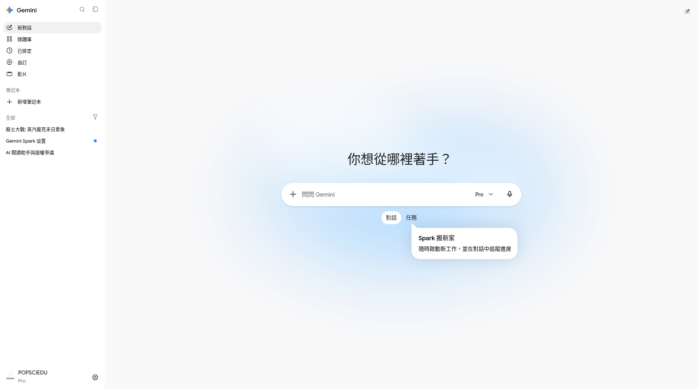
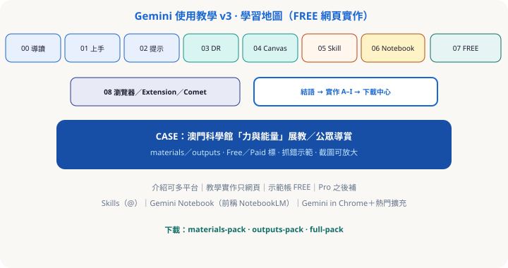

互動教材 v3 · 繁中（香港／澳門）· 科學館展教 CASE
Gemini 網頁版實作課（FREE 主線）
介紹可談多平台；跟做只集中 gemini.google.com。對齊參考站模式：materials／outputs、逐步截圖、Free／Paid 標、AI 抓錯。情境貫穿：澳門科學館「力與能量」公眾導賞。
Free 主線介紹多平台實作＝網頁Pro 之後補
真實介面一瞥


示範帳訂閱徽章可能與 FREE 功能線不一致（以功能線／使用者指定分工為準：popsciedu＝FREE、wayneleong＝Plus、awwgj4p65t＝Pro）。
本課怎麼用（對齊參考站）
① materials／outputs
下載來源材料，對照教師預跑成品；可打包 ZIP。
② 每步有圖或待補卡
實拍可點放大；缺圖寫清「應出現什麼」，不空槽充數。
③ 一條 CASE 貫穿
展教會議→導賞稿→Research→Canvas→Skill→（Notebook 視地區）→瀏覽器加分。
學習地圖

2026-10 用語
- Skills 為主（
@呼叫）；Gems 過渡並存一句帶過。 - Gemini Notebook（前稱 NotebookLM）。
- 實作只網頁；Live／手機／桌面＝介紹＋待補。
- 示範帳分工：popsciedu＝FREE 功能線、wayneleong＝Plus、awwgj4p65t＝Pro；舊 Pro 截圖必標 Paid。
- 新實拍 f01–f03／f06–f08：網頁版 FREE 功能線；個資已遮黑。畫面若見 Pro 徽章，以功能線為準。